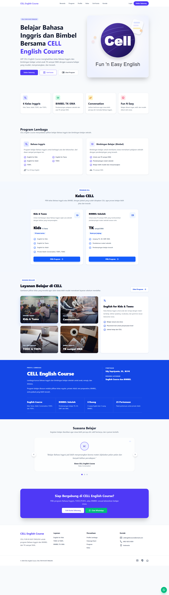
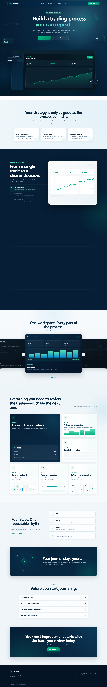
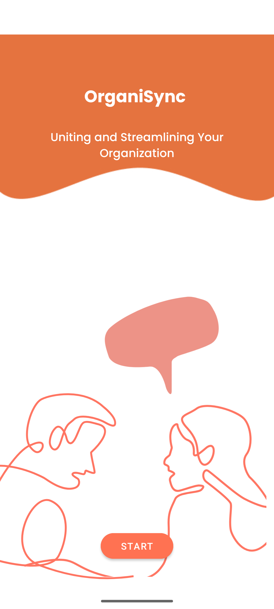
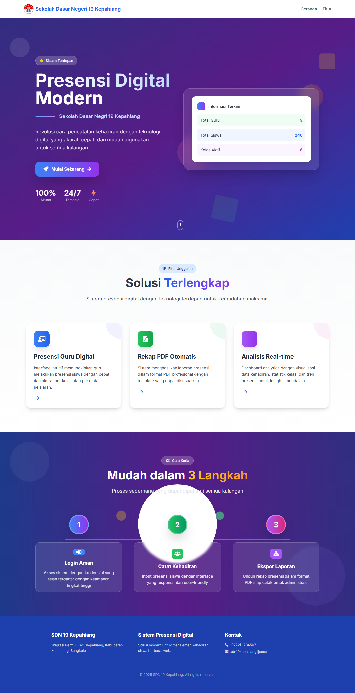
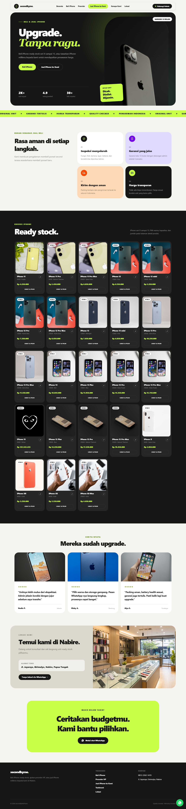

Frontend & Interface
Membangun antarmuka web responsif dengan pendekatan server-rendered maupun single-page application.
Fresh Graduate Informatika · Cloud Computing
Saya Ivan Dhany Jessicca Prihandana, fresh graduate Informatika Universitas Ahmad Dahlan dan lulusan Bangkit Academy 2024. Melalui proyek akademik dan mandiri, saya mengembangkan antarmuka, proses bisnis, REST API, database, pengujian, serta deployment aplikasi web.
Resume tersedia dalam format PDF. Buka file langsung
 React
React
 TypeScript
TypeScript
 Laravel
Laravel
 PHP
PHP
 Tailwind
Tailwind
 Cloud
Cloud
 Firebase
Firebase
 Docker
Docker
 MySQL
MySQL
 Git
Git
01 — Tentang
Saya tertarik pada proses membangun aplikasi secara utuh—dari pengalaman pengguna sampai layanan yang menjalankannya.
Pengalaman proyek saya mencakup antarmuka dengan Blade, Tailwind CSS, React, dan TypeScript; backend dengan PHP, Laravel, dan REST API; serta pengelolaan data menggunakan MySQL, PostgreSQL, Firestore, dan IndexedDB.
Jalur Cloud Computing di Bangkit Academy memperluas pemahaman saya pada deployment, integrasi layanan, IAM, monitoring, dan pengelolaan aplikasi menggunakan Google Cloud. Dengan fondasi ini, saya dapat memahami hubungan antarlapisan aplikasi tanpa menghilangkan perhatian pada kualitas setiap bagiannya.
02 — Keterampilan
Teknologi yang digunakan langsung dalam proyek akademik, mandiri, dan capstone Bangkit.
Membangun antarmuka web responsif dengan pendekatan server-rendered maupun single-page application.
Mengembangkan proses bisnis, REST API, autentikasi, validasi, transaksi, dan kontrol akses aplikasi.
Merancang dan mengelola data relasional, cloud database, serta penyimpanan lokal browser.
Men-deploy layanan aplikasi dan memahami operasional dasar infrastruktur Google Cloud.
Mendukung alur pengembangan dengan version control, container, pengujian, dan pemodelan proses.
Kemampuan bahasa dan keterampilan interpersonal yang mendukung kolaborasi serta pelaksanaan proyek.
03 — Proyek Unggulan

Full-Stack Registration System
Proses pendaftaran perlu mengakomodasi pilihan program, pembayaran, dan alur placement test khusus calon peserta kursus Inggris.
Mengembangkan antarmuka dan proses backend untuk registrasi, pemeriksaan kapasitas program, unggah bukti pembayaran, verifikasi admin, placement test otomatis, penjadwalan kelas, serta ekspor data.

React Web Application
Catatan trading, evaluasi keputusan, dan pola performa sering tersebar sehingga proses belajar sulit ditinjau secara konsisten.
Mengembangkan antarmuka pencatatan transaksi, perhitungan metrik performa, equity curve, kalender trading, validasi aturan risiko, serta backup data lokal melalui impor dan ekspor JSON.

Cloud Backend · Bangkit 2024 Capstone
Informasi berita dan kegiatan organisasi mahasiswa membutuhkan satu platform yang lebih terpusat dan mudah diakses.
Mengembangkan dan men-deploy API untuk berita, registrasi, dan login di App Engine; mengintegrasikan Firestore; serta mendokumentasikan endpoint agar dapat digunakan oleh tim Android.

Full-Stack School Information System
Pencatatan presensi dan rekap kehadiran siswa perlu dikelola dalam sistem yang lebih terstruktur untuk administrator dan guru.
Mengembangkan dashboard administrasi, autentikasi guru, pengelolaan siswa dan kelas, alur pencatatan kehadiran, ringkasan data, kontrol akses, serta laporan PDF.

Full-Stack Catalog & Preorder
Katalog iPhone bekas membutuhkan informasi produk dan varian yang terstruktur, pengelolaan stok, serta alur preorder yang mudah ditindaklanjuti oleh administrator.
Mengembangkan katalog dan detail produk, dashboard admin, unggah gambar, stok berdasarkan kapasitas dan warna, alur preorder menuju WhatsApp, pengelolaan status pesanan, autentikasi, validasi, serta feature test.
04 — Pengalaman Proyek
Peran proyek yang membentuk kemampuan pengembangan web end-to-end sekaligus fondasi cloud.
Juli 2026 — Oktober 2026 · Proyek Mandiri
Mengembangkan katalog produk, varian dan stok, dashboard administrator, autentikasi, alur preorder menuju WhatsApp, pengelolaan status pesanan, feature test, dan lingkungan lokal dengan Docker Compose.
Laravel · Blade · MySQL · DockerJanuari 2026 — September 2026 · Tugas Akhir
Mengembangkan sistem registrasi, pembayaran, placement test otomatis, penjadwalan kelas, pengelolaan kapasitas dengan transaksi database, dashboard admin, dan ekspor data Excel.
Laravel · Tailwind CSS · MySQLJuni 2026 — Juli 2026 · Proyek Mandiri
Mengembangkan jurnal trading dengan formulir terstruktur, perhitungan metrik performa, equity curve, kalender trading, validasi risiko, penyimpanan IndexedDB, dan backup JSON.
React · TypeScript · Vite · IndexedDBMaret 2025 — Agustus 2025 · Proyek Sekolah
Mengembangkan sistem presensi dengan dashboard Filament, pengelolaan data akademik, alur pencatatan guru, ringkasan kehadiran, kontrol akses, dan ekspor laporan PDF.
Laravel · Filament · MySQLSeptember 2024 — Januari 2025 · Bangkit Academy
Berkolaborasi dalam tim lintas disiplin untuk membangun dan men-deploy backend API, mengintegrasikan Firestore, menyiapkan layanan di App Engine dan Compute Engine, serta mendukung integrasi aplikasi Android.
Top Distinction · National Top 50 Capstone05 — Sertifikasi & Pencapaian
Bangkit Academy 2024 · Achievement
Terpilih sebagai bagian dari 50 tim terbaik pada Bangkit Product Track Capstone Project melalui proyek kolaboratif lintas disiplin.
Dicoding Indonesia · Kompetensi
Menyelesaikan kelas 42 jam yang membahas komputasi, data, jaringan, monitoring dan logging, IAM, serta deployment solusi di Google Cloud.
Dicoding Indonesia · Cloud & AI
Menyelesaikan kelas 40 jam tentang deployment model TensorFlow, Compute Engine, App Engine, Cloud Storage, Firestore, dan Vertex AI.
Dicoding Indonesia · Artificial Intelligence
Menyelesaikan kelas 10 jam yang mencakup konsep dasar AI, data untuk AI, machine learning, dan pengantar deep learning.
Dicoding Indonesia · Web Development
Menyelesaikan kelas 41 jam tentang semantic HTML, CSS, Flexbox, layout responsif, serta proyek akhir halaman web.
06 — Kontak
Saya terbuka untuk peluang entry-level di bidang Full-Stack Development, Backend Development, dan Cloud Engineering, serta kolaborasi proyek yang relevan.